Подготовить событие
Название, сроки, место и документы — отдельные смысловые блоки.
03 / RuChamp · спортивная платформа
Спроектировал сценарии для тех, кто проводит соревнование, участвует в нём и следит за результатом.
Разобрать решения ↓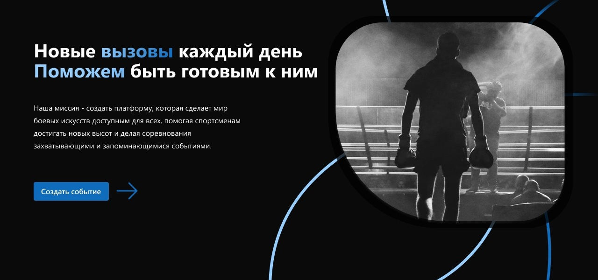
Задача / связать разные стороны события
Организатору нужно подготовить событие. Спортсмену — подать заявку и понять, что с ней происходит. Зрителю — найти нужную категорию и разобраться в результате.
Я связал эти задачи вокруг события: информация, участники, матчи, сетка и результаты стали разделами одного контекста. При этом личные заявки и история выступлений остались в кабинете спортсмена.
Название, сроки, место и документы — отдельные смысловые блоки.
Мои заявки, ожидание оплаты, история выступлений и переход к сетке.
Найти категорию, проследить путь участника, увидеть призёров.
01 / Вход в продукт
В регистрации я выделил выбор роли в отдельный шаг. Спортсмен, зритель, организатор и судья приходят с разными задачами — это различие должно быть видно до начала работы.
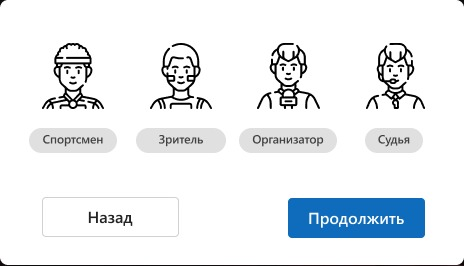
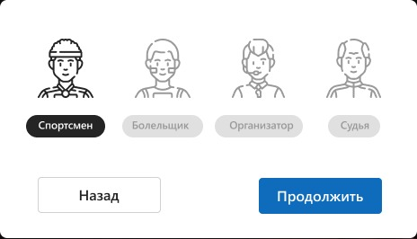
Смысл решения: не предлагать одинаковый старт человеку, который создаёт турнир, и человеку, который хочет в нём выступить.
Восстановление выделил в самостоятельный путь: адрес почты → новый пароль → подтверждение результата. Ошибка размещена рядом с полем, а завершение обозначено отдельным сообщением.
Фрагменты макетов. Значения почты и паролей скрыты.
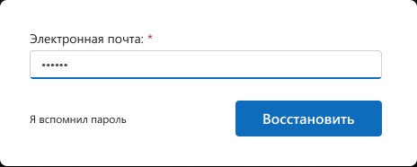
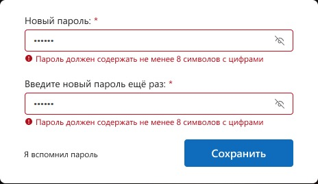
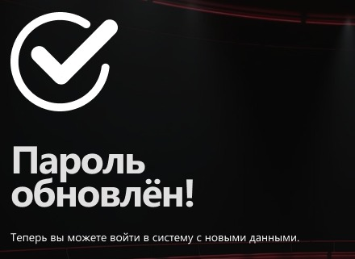
02 / Сценарий организатора
Я разделил настройку на четыре раздела: что состоится, когда, где и с какими документами. Вместо длинной формы — обозримые группы полей с постоянной навигацией.
Сроки соревнования и окно приёма заявок вынесены в разные поля. Подготовка состава начинается раньше самого события — интерфейс должен отражать эту разницу.
Переключите раздел, чтобы рассмотреть фрагмент макета.
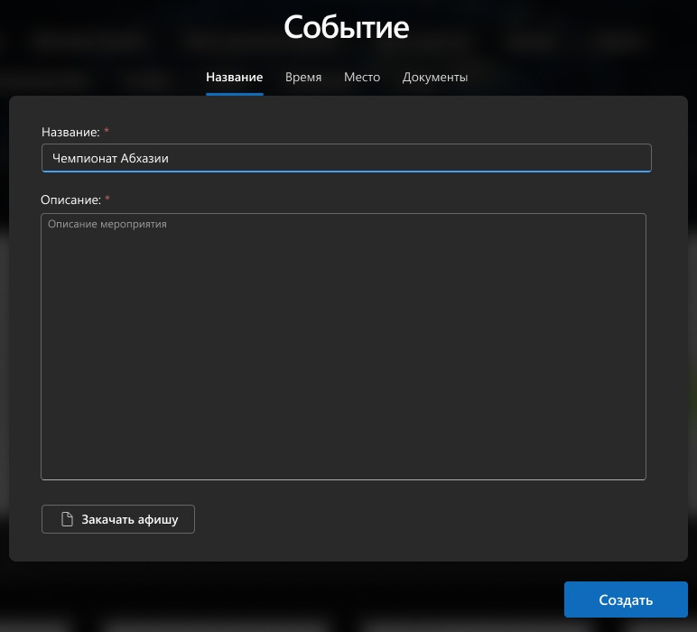
Сначала — содержание события. Афиша дополняет описание, а не заменяет его.
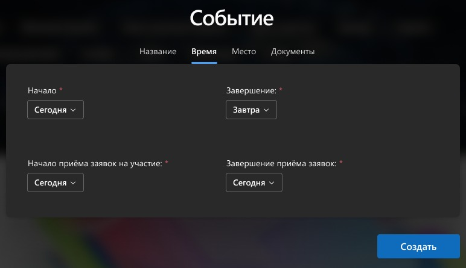
У соревнования и регистрации разные начало и завершение. Все четыре значения находятся рядом.
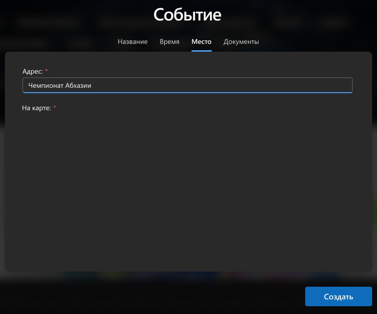
Для места выделен отдельный раздел. В этом макете показана структура; область карты ещё не заполнена.
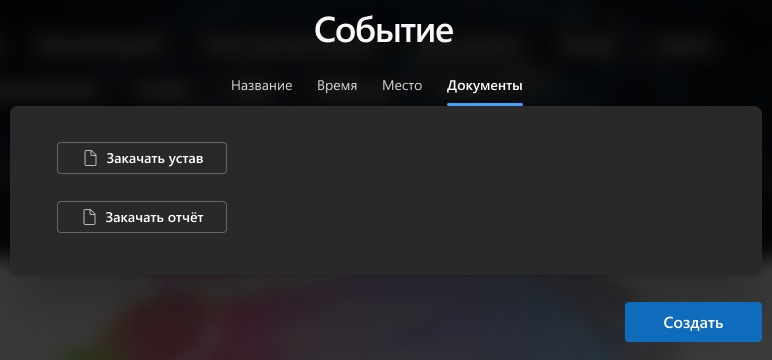
Устав и отчёт не смешаны с описанием: для каждого документа предусмотрено собственное действие.
03 / Структура соревнования
В единоборствах состав участников зависит сразу от нескольких параметров. Я совместил группировку спортсменов по категориям с фильтрами пола, веса, возраста и уровня.
Критерии находятся рядом со списком, а метки группы помогают понять, кого именно показывают карточки.
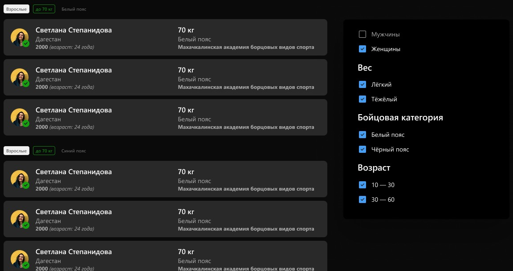
04 / Кабинет спортсмена
Я разделил работу с заявками и историю выступлений. В первом случае важно состояние участия и доступное действие. Во втором — когда состоялось событие и с каким результатом.
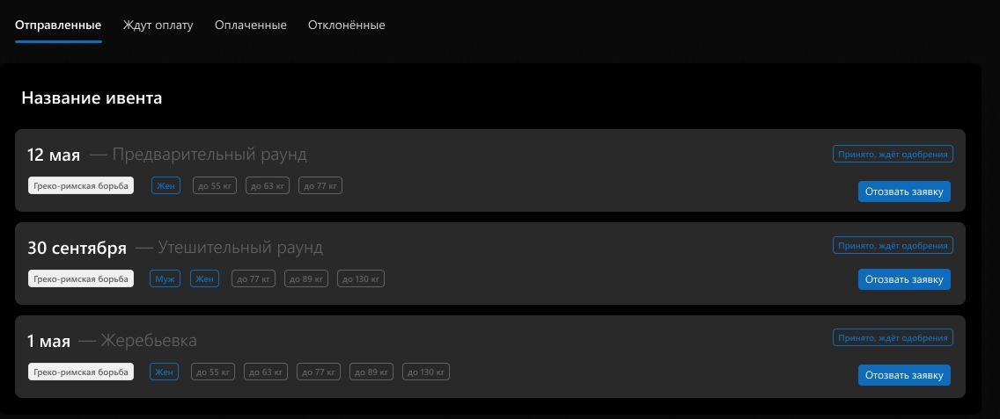
«Отправленные», «Ждут оплату», «Оплаченные», «Отклонённые» отвечают на разные вопросы. Я вынес их в отдельные вкладки, а не оставил человеку один общий список.
Статус и «Отозвать заявку» относятся к конкретному участию. Их не нужно искать в настройках профиля или на публичной странице события.
Будущие, прошедшие и отменённые события разведены по вкладкам. В прошедших рядом с датой показан результат, а переход к турнирной сетке сохраняет связь с самим соревнованием.
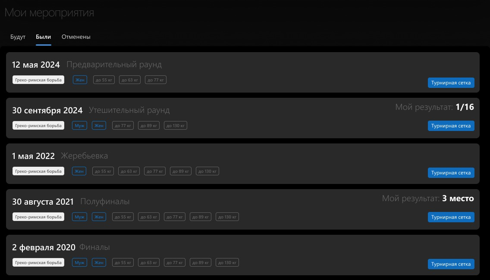
05 / Самое наглядное решение
В большой сетке легко потерять одного спортсмена среди похожих карточек. Я предусмотрел выделение его пути при наведении на победителя: так отдельные встречи складываются в последовательность.
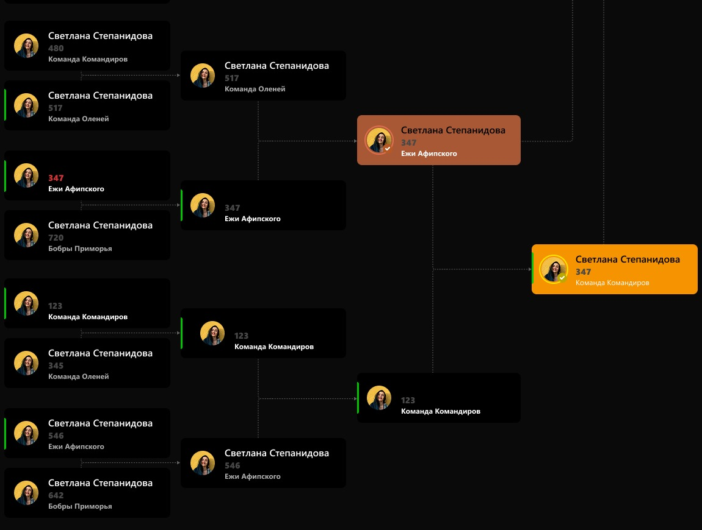
Положение карточек и соединения показывают переходы между раундами. Выделение помогает сосредоточиться на одном пути, не теряя общую структуру.
Рассмотреть сетку целиком ↗Для быстрого ответа «кто занял призовые места?» я сделал отдельное представление. Медали и три колонки позволяют читать итог без разбора всех встреч.
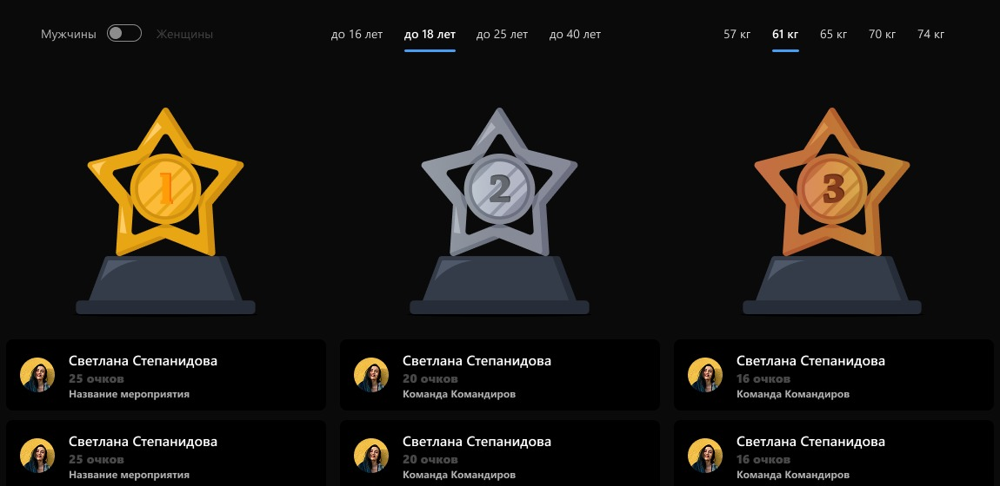
Итог / что связывает решение
В результате проектирования получилась связанная система экранов: организатор описывает соревнование, спортсмен работает со своим участием, а сетка и результаты объясняют ход и итог турнира.
Следующий шаг — сценарные тесты. Это план проверки, а не заявленные результаты запуска.
В кейсе показано проектирование интерфейса. Имена, даты и числа в макетах иллюстративные; производственные метрики и результаты пользовательских тестов здесь не заявлены.
Главные кейсы портфолио